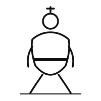
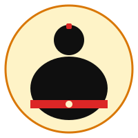
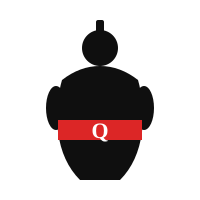

Three SVG concepts. Each shown on light and dark. Pick one (or "none, generate via AI later").

Single-stroke silhouette in shiko (wide) stance. Monochrome. Best for docs headers + favicon. Lowest brand presence.

Abstract sumo on a sand-coloured ring (dohyo). Red mawashi accent. Reads at small sizes. Best for repo social-card / GitHub avatar.

Filled silhouette with serif Q in the mawashi — QA tie-in is immediately visible. Strongest brand presence. Best for slides + stickers.